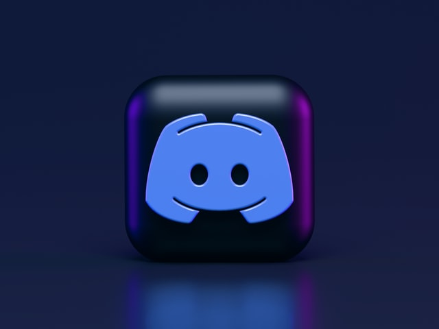

<!DOCTYPE html>
<html>
    <head>
        <title>Harshnoor | Project Idea</title>
        <link href="https://cdn.jsdelivr.net/npm/bootstrap@5.1.3/dist/css/bootstrap.min.css" rel="stylesheet" integrity="sha384-1BmE4kWBq78iYhFldvKuhfTAU6auU8tT94WrHftjDbrCEXSU1oBoqyl2QvZ6jIW3" crossorigin="anonymous">
        <link rel="stylesheet" type="text/css" href="style.css">
        <link rel="preconnect" href="https://fonts.googleapis.com">
        <link rel="preconnect" href="https://fonts.gstatic.com" crossorigin>
        <link href="https://fonts.googleapis.com/css2?family=Roboto:wght@100;300;400;700&display=swap" rel="stylesheet">
    </head>
</html>
<body>
    <nav id="navbar">
        <div class="container">
            <ul>
                <li><a href="index.html">Home</a></li>
                <li><a href="about.html">About Me</a></li>
                <li><a href="interest.html">Interest in IT</a></li>
                <li><a href="job.html">Dream Job</a></li>
                <li><a href="profile.html">Profile</a></li>
                <li id="current"><a href="idea.html">Project Idea</a></li>
            </ul>
        </div>
    </nav>

    <div class="main-content">
        <div class="container">
            <h1><emphasize>&gt;</emphasize> Project Idea</h1>

            <h2>Overview</h2>
            <div class="row">
                <div class="col-lg-5">
                    
                </div>
                <div class="col-lg-7">
                    <p>My Project Idea is to make a Discord music Bot. The purpose of the Discord music bot as the name entails will be to play music in a Discord voice channel as you socialise or play games with your friends. The bot will only play music in the background, and users will be able to play songs by typing the name of the song as a command in a text channel. After a user has typed the name of a song the bot in theory needs to play music in the voice channel the user is connected to. In a way, the bot will act as a music streaming service, where users can listen to songs with friends as long as they are connected to a voice channel on a Discord server.</p>
                </div>
            </div>

            <h2>Motivation</h2>
            <p>The Inspiration for the Discord music bot came from me, noticing how many competitors there really are in the Discord music bot space. I have tried a lot of music bots myself and can’t stop to think that 90% of the time there’s always a feature missing that’s important to me and perhaps other people out there. As me and my friends constantly communicate via Discord and use discord bots daily, I feel that it’s finally time that we made a Discord bot that appeals to our use-case. Furthermore, as the big and most utilized music bots like Rhythm and Groovy have been shut down, now is better time than ever as the users who were using Groovy or Rhythm will be in the market for a replacement music bot, and perhaps might even make the decision to switch to our personal Discord Music bot</p>

            <h2>Description</h2>
            <div class="row">
                <p>As previously discussed, the primary function of the Discord music bot will be to play music on a discord voice channel, that will allow multiple users to listen along at once. Therefore, the first feature of the bot like any other bot will be commands. The idea is that the user will be able to write commands on a text channel and the bot will then execute them. These commands can include specifying the name of the song that needs to be played, as well as play/ pause and a skip song feature. As the skip song feature implies, the user will be able to request multiple songs at once. If the user requests multiple songs to be played at once, the bot will then play the first song requested and place all other songs in a queue to be played later. Songs placed in a queue will be played in the order that they were requested in. After a song has stopped playing instead of the song being deleted the song will remain in the queue. This is because the bot will follow an iterative approach to playing songs, or in other words will loop the queue. This means that once the bot has reached the bottom of the queue and has finished the last song, the bot will move to the top of the queue and start playing the songs in the same order again. This is important as most users utilize Discord to chat while playing games, Hence, the loop feature will keep the user immersed in the game, ensuring that the user never have to worry about queuing songs again, it’s just name the songs you want the bot to play and the bot will take care of the rest. The user will also be able to view what’s in the queue with the view queue feature which will print all the songs in the queue in order.</p>
                <div class="col-md-8">
                    <p>Similarly, another important feature of the bot, is the search function. Much like YouTube or Spotify, where the user types the name of the song and the application automatically gives the relevant results, our bot is expected to do the same. When a user uses the play song command the bot is expected to automatically fetch the song by the name. Alternatively, the user will also be allowed to type a YouTube link to the song, however the main way of playing songs will be by the name of the song, and the bot takes care of the rest.</p>
                </div>
                <div class="col-md-4">
                    
                </div>
                <p>Furthermore, As the user will be able to add multiple songs to the queue at once, there will also have to be a better way of navigating songs in the queue. Hence, jump song and remove song features will also need to be added. The jump song feature will work by the queue being numbered. With the first song requested being 1 and the second song requested being 2 and so on. By this hand, along with previous and next song feature the user will be able to specify the number of a song in the list and the bot will automatically jump to that song as requested. Alternatively, the remove song feature will work by the user specifying the number of a song and the bot will automatically delete that song from the queue.</p>
                <p>Finally, the final feature required is the disconnect feature, this will stop the music that the bot’s playing, remove all songs from the queue and disconnect the bot from the voice channel automatically so the users can go about their day peacefully again.</p>
            </div>

            <h2>Tool and technologies</h2>
            <div class="row">
                <div class="col-lg-4">
                    
                </div>
                <div class="col-lg-8">
                    <p>To successfully create a Discord music bot requires the use of a programming language. The programming language will be used in the backend to process the commands the user gives into instructions that can be executed to fulfill what the user wants done. For this project we will be using Python as our programming language, as Python supports the Discord API, which is necessary to code a Discord Music bot. </p>
                </div>
                <p>Hence, another piece of technology we will be utilizing is Discord.py API. The API will allow our bot to communicate directly with Discord and its servers and will allow us to make a bot account for our project, which necessary for our project. Finally, we will also be using FFMPEG which will allow us to handle the music requests and will be responsible for playing the music for a bot.</p>
            </div>

            <h2>Skills Required</h2>
            <p>As previously mentioned, the project requires the user to have mastered Python, as the project will be predominantly written in Python. However, as Python is easier to learn compared to other alternatives, that should not be an issue. We are also required to have knowledge of how to use the Discord.py API, as our Python code will mainly be written utilizing Discord.py. Discord API plays an important throughout the whole development process, as without its vanilla Python can’t communicate with the Discord application. Therefore, mastering the Discord API in Python is necessary as it acts as the puzzle piece that the whole project together. Finally, we all need some minor skills in cloud platforms, as the bot is required to be deployed and hosted on a server to have close to 24/7 runtime, without any hiccups. In my experience, Heroku is a good cloud platform as it is easy to use and flexible enough for beginners with no experience in cloud platforms or hosting.</p>

            <h2>Outcome</h2>
            <p>If successful, the Discord Music bot will give users of the Discord application a new way to enjoy music while having fun with their friends in the comfort of their homes. As the previous Music bots, Groovy and Rhythm who have almost had a monopoly on Discord music bots for years have been shut down, this project will allow the past users of those bots to enjoy similar feature sets in a way that feels like those bots have never been shut down.</p>
        </div>
    </div>
    
    <footer>
        <div class="container">
            <ul>
                <li id="current"><a href="index.html">Home</a></li>
                <li><a href="about.html">About Me</a></li>
                <li><a href="interest.html">Interest in IT</a></li>
                <li><a href="job.html">Dream Job</a></li>
                <li><a href="profile.html">Profile</a></li>
                <li><a href="idea.html">Project Idea</a></li>
            </ul>
            <h1>Copyright &copy; All Rights Reserved by Harshnoor Singh (harshnoor34@gmail.com)</h1>
        </div>
    </footer>
</body>